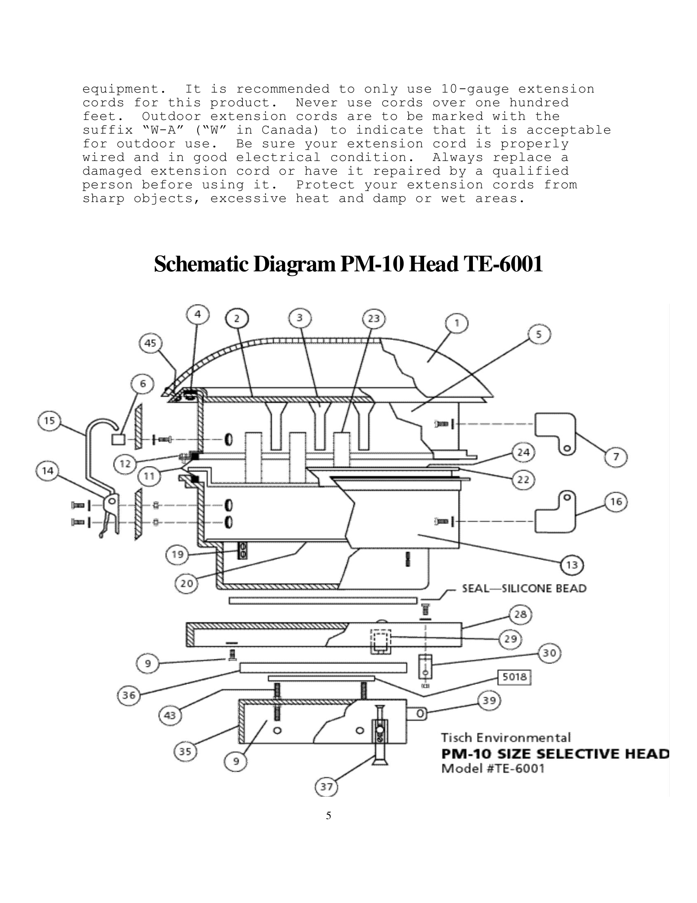
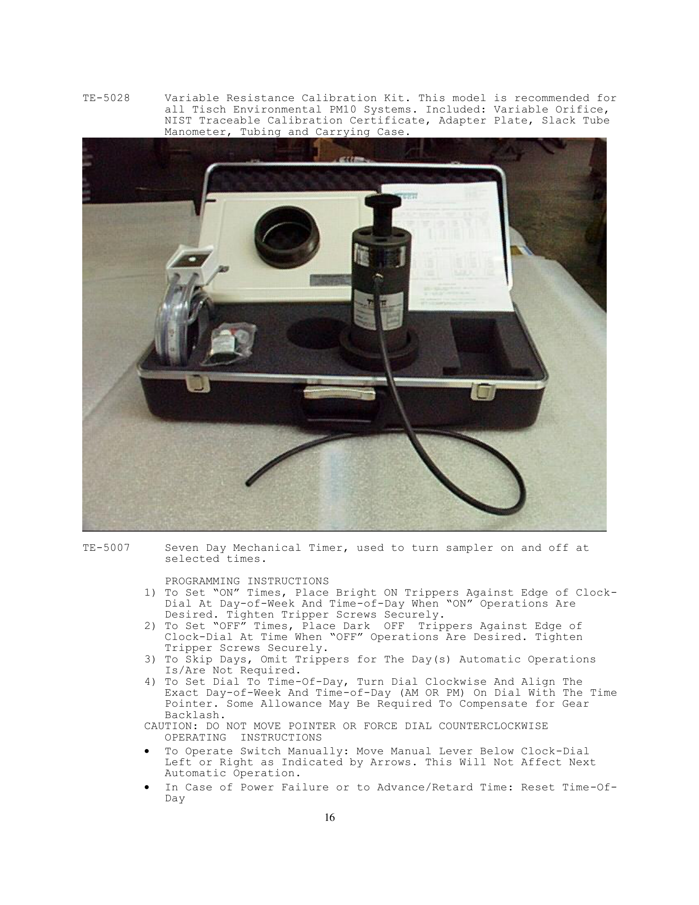
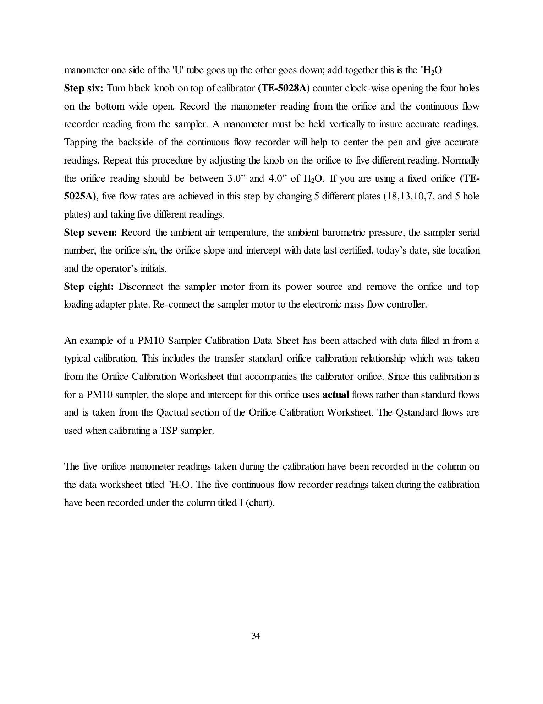
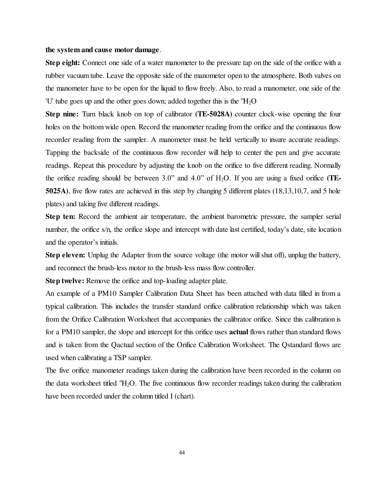

Muestreador Hi-Vol Tisch PM10
Código patrimonial: 33691.07.088216 · Laboratorio: Gabinete de Calidad de Aire
Muestreo volumétrico de material particulado PM10 (EPA 40 CFR Part 50 App. J).

1. Objetivo
Estabilizar el procedimiento de calibración volumétrica, acondicionamiento de filtros, muestreo de 24 horas y cálculo gravimétrico de PM10 con el muestreador TE-6070.
2. Ficha técnica
| Parámetro | Especificación |
|---|---|
| Caudal nominal | 1.13 m³/min (40 CFM) ±5% |
| Rango de caudal | 0.85 a 1.42 m³/min (30-50 CFM) |
| Control de caudal | MFC con compensación T/P |
| Exactitud | ± 2% de lectura |
| Protección | Gabinete NEMA 4X · IP66 |
3. Calibración y verificación
Caudal: 1.13 m³/min ± 5%
Rango: 36 a 44 CFM
| Actividad | Periodicidad | Patrón |
|---|---|---|
| Calibración externa de flujo (5 puntos) | Cada 24 meses — laboratorio acreditado ISO/IEC 17025 | Kit TE-5028 con orificio certificado NIST + manómetro 30” |
| Verificación interna | Trimestral y antes de cada uso significativo | TE-5028 / TE-5028A |
| Comprobación de flujo en 1 punto | Trimestral | TE-5028A |
Criterio: caudales de 1.02–1.24 m³/min (36–44 CFM), r ≥ 0.990 y al menos 3 de 5 puntos dentro del rango de aceptación.
4. Flujo de trabajo (3 fases · 9 pasos)
Fase I · Preparación
- Acondicionar y pesar filtro inicial (W1).
- Trasladar en carpeta rígida y colocar disco gráfico.
- Instalar filtro centrado y asegurar 4 tuercas.
Fase II · Muestreo 24 h
- Programar ciclo de 24 h continuas.
- Arrancar motor y verificar caudal en la banda 40 CFM ± 2 CFM.
- Tras 24 h, retirar filtro y plegar con superficie expuesta hacia adentro.
Fase III · Cierre y pesada
- Registrar horómetro y volumen.
- Acondicionar filtro 24 h y pesar (W2).
- Calcular PM10 en µg/m³ y archivar disco gráfico.
1
Montaje del orificio — retirar cabezal PM10 y colocar plato TE-5028.
2
Manómetro — conectar manómetro de agua de 30 pulgadas al orificio.
3
5 puntos — ajustar placas y registrar lectura de orificio (inH2O).
4
Curva de regresión — Qa vs presión del registrador (r ≥ 0.990).
5
Ajuste a 40 CFM — fijar tornillo MFC al valor nominal.
5. Seguridad y EPP
Guantes y pinzas
Manipular filtros solo por los bordes, sin transferir grasas.
Manipular filtros solo por los bordes, sin transferir grasas.
Calzado
Suela antideslizante para acceso a azoteas.
Suela antideslizante para acceso a azoteas.
Casco
Casco con barboquejo obligatorio en azoteas.
Casco con barboquejo obligatorio en azoteas.
EPP visual
Lentes antiimpacto para limpieza y manejo de equipos.
Lentes antiimpacto para limpieza y manejo de equipos.
Contingencia: filtro roto interrumpe el muestreo (queda anulado); desviación de flujo > ±5% detiene el proceso y obliga a recalibrar mediante el orificio patrón.
6. Imágenes de referencia (manual del fabricante)



7. QR de trazabilidad
Escanea para abrir esta tarjeta en el navegador.
Volver al índiceFuente: DOCX SOP-LAB-EQ-33691.07.088216 editado 06/10/2026 · Manual TE-6070 PM10 High Volume Air Sampler. Tarjeta piloto; prevalece el SOP completo.